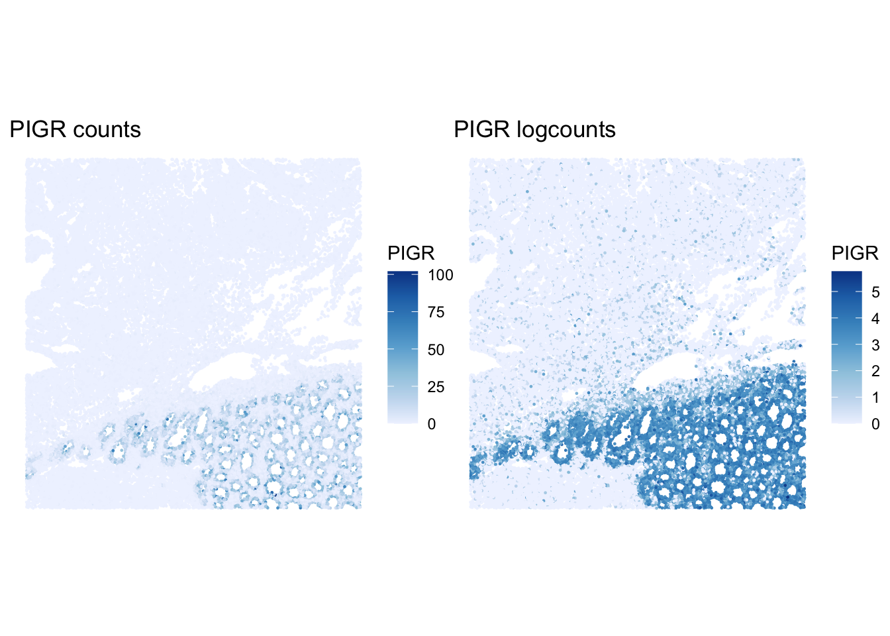

Exercise 4B: Xenium Normalization
Normalization and scaling for Xenium
In this exercise, we normalize the Xenium SpatialFeatureExperiment from Exercise 1B. The observations are segmented cells, and the measured features come from a targeted Xenium panel rather than a whole-transcriptome assay.
This means that normalization is useful for visualization and exploratory analysis, but the interpretation differs from Visium HD normalization.
Learning objectives
By the end of this exercise, you will be able to:
- Add log-normalized values to a Xenium
SpatialFeatureExperiment. - Handle zero-count cells before normalization.
- Inspect size factors and assay names.
- Compare raw and log-normalized marker patterns.
- Scale selected targeted-panel features.
Libraries
Load the Xenium object
We start with the QC-filtered Xenium object saved at the end of Exercise 2B.
# Reload the SpatialFeatureExperiment object if not in the R session already
sfe <- readObject("results/day1/01.2b_sfe_xenium/")
sfeclass: SpatialFeatureExperiment
dim: 541 47671
metadata(1): Samples
assays(1): counts
rownames(541): ABCC8 ACP5 ... UnassignedCodeword_0330
UnassignedCodeword_0338
rowData names(10): ID Symbol ... vars is_neg
colnames(47671): ablhnkec-1 ablhpkkh-1 ... oikdllpb-1 oikeebja-1
colData names(33): transcript_counts control_probe_counts ...
dense_outlier main_tissue
reducedDimNames(0):
mainExpName: NULL
altExpNames(0):
spatialCoords names(2) : x_centroid y_centroid
imgData names(4): sample_id image_id data scaleFactor
unit: micron
Geometries:
colGeometries: centroids (POINT), cellSeg (MULTIPOLYGON), nucSeg (MULTIPOLYGON)
Graphs:
sample01: Log-normalization
The Xenium object starts with raw counts. Some segmented cells may have zero counts for this targeted panel in the selected region. These cells cannot receive positive size factors, so we remove them before log-normalization.
We use the scuttle::logNormCounts() function to compute size factors and add a logcounts assay.
This function will deprecate soon and replaced by the faster scrapper::normalizeRnaCounts.se() function.
assayNames(sfe)[1] "counts"
FALSE
47671 sfe <- sfe[, cell_totals > 0]
sfe <- logNormCounts(sfe)
assayNames(sfe)[1] "counts" "logcounts"summary(sizeFactors(sfe)) Min. 1st Qu. Median Mean 3rd Qu. Max.
0.07832 0.47778 0.78325 1.00000 1.26103 10.64436 How many zero-count cells were removed before normalization? Why can zero-count cells be a problem for size-factor normalization?
table(cell_totals == 0)
FALSE
47671 Cells with zero total counts would have zero size factors, but size factors must be positive for log-normalization.
How is normalization of Xenium data conceptually different from normalization of Visium HD data?
Visium HD binned data are fixed spatial areas. Differences in total counts can reflect tissue density, local capture efficiency, and biology within each cell.
In Visium HD or Xenium segmented cells, differences in total counts can reflect cell size, segmentation, local detection efficiency
Specific to the Xenium is the targeted panel design. Because Xenium measures a selected panel of genes, normalized values are useful but should not be interpreted exactly like whole-transcriptome logcounts. Indeed the panels are often create to study specific cell-types in the tissue section, which breaks some assumpitons of the normalization methods. See this interesting paper about this issue: https://link.springer.com/article/10.1186/s13059-024-03303-w
We can compare raw and log-normalized spatial patterns for a marker present in the Xenium panel.
p_counts <- plotSpatialFeature(sfe, "PIGR", exprs_values = "counts") +
ggtitle("PIGR counts")
p_logcounts <- plotSpatialFeature(sfe, "PIGR", exprs_values = "logcounts") +
ggtitle("PIGR logcounts")
p_counts + p_logcounts
How does the PIGR pattern change after log-normalization? Does normalization remove all spatial structure?
Scaling selected features
Scaling centers and rescales features so that they can be compared on a common scale. This is useful for visualization and multivariate methods, but here the features are from a targeted panel.
[1] "PIGR" "CEACAM5" "MUC17" "OLFM4" ablhnkec-1 ablhpkkh-1 ablicbjh-1 ablineen-1 ablioegm-1
PIGR -0.6232978 0.13507255 -0.6232978 0.03765895 -0.6232978
CEACAM5 -0.8992464 -0.01957193 0.1808997 -0.89924637 -0.8992464
MUC17 -0.3587449 -0.35874493 2.6444325 1.77288684 -0.3587449
OLFM4 0.6157919 -0.43288842 -0.4328884 1.39309510 1.0209213What does a positive scaled value mean for a gene in one cell? Why should scaling be interpreted in the context of the targeted Xenium panel?
A positive scaled value means that the cell has expression above the average for that gene, relative to the variation of that gene across the selected cells. Because Xenium measures a targeted panel, scaling compares genes and cells within that panel rather than across a full transcriptome.
Save normalized object
We save the normalized Xenium object for later optional comparisons.
dir.create("results/day2", showWarnings = FALSE, recursive = TRUE)
alabaster.sfe::saveObject(sfe, "results/day2/02.1b_sfe_xenium")Clear your environment:
Key Takeaways:
- Xenium normalization should be performed separately from Visium HD normalization.
- Zero-count cells must be handled before size-factor normalization.
- Xenium normalized values are useful, but should be interpreted in the context of segmented cells and a targeted panel.